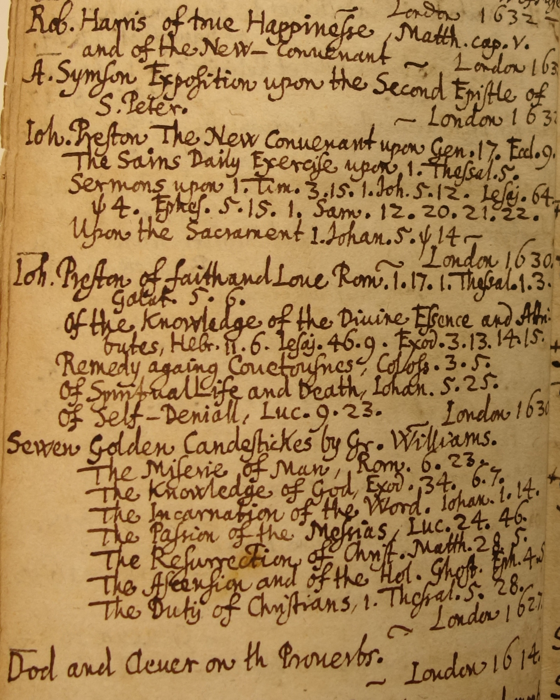
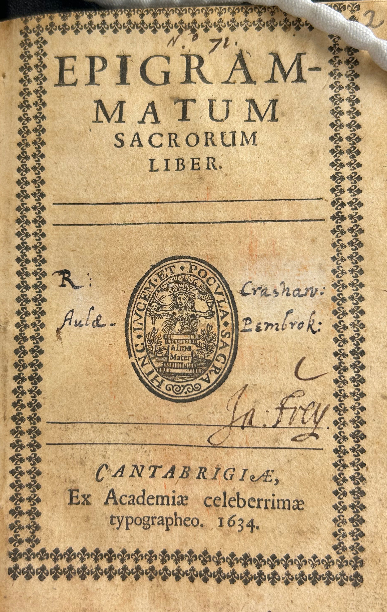

Bought in England


In August 1636, when the scholar and ordained minister Johann Jacob Frey died in Basel, where he had been professor of Greek for just a year, he left a library of well over 200 books that had been written in English and / or published in England. These books are now held at the University Library of Basel and include mostly sermons and theological works, but also an intriguing selection of literature and other nonfiction. The books became one of the cornerstones of the Frey-Grynaeum library in Basel, a building and collection established by the theology professor Johann Ludwig Frey (1682–1759), a great-grandson, who also collected "Anglicana".
Most of Frey’s books are bound in gilt-tooled leather with a small printed book label but show little signs of use; in September 1635, he wrote to a friend: "My books (which I have bought in England) are yet at Cologne and in the Low Countries, from whence I cannot expect any, until we have peace along the Rhine". Even if the books did make it to Basel that winter, Frey had little time for reading: he started lecturing, got married, did research, corresponded with friends and negotiated his return to Britain as a Dean in Northern Ireland. The books he bought certainly indicate excellent literary taste, as in the beautiful folio volumes of Philip Sidney's Arcadia, The Faerie Queene and a Second Folio of William Shakespeare's works, just out in 1632 and now the pride of Basel's library. Nonfiction titles include manuals on horsemanship and heraldry and the pronunciation of Greek.
The 35 volumes which do carry Frey's signature or MS notes include Frey's personal Bible, which he took everywhere on his travels (Hebrew Old Testament, Greek New Testament and Thomas Sternhold's singable Psalms in the middle). Then there are Marcus Aurelius' Meditations, a copy of Lewis Bayly's devotional uber-bestseller The Practice of Piety, and Plato’s dialogue Menexenos with copious MS teaching notes.
More surprising items on the shelves of a Protestant minister are Francis Bacon's Advancement of Learning, Joseph Rutter's tragicomedy The Shepherd's Holyday and the early Latin epigrams of Richard Crashaw, who was to become one of the most baroque metaphysical poets in English. Crashaw converted to Catholicism and died in Loreto (Italy), and his epigrams are the only book on which Frey comments in a letter: ""Epigrammata sacra made by one at Pembrockhall at Cambridge [Pembroke College], I like them exceedingly".
Regula Hohl TrilliniBREAKING NEWS In February 2025, we discovered a handwritten library catalogue which Frey's son made in 1696. It is considerably longer than the list of books described above and may teach us that his father's interest in English writing was even more varied than we know now.